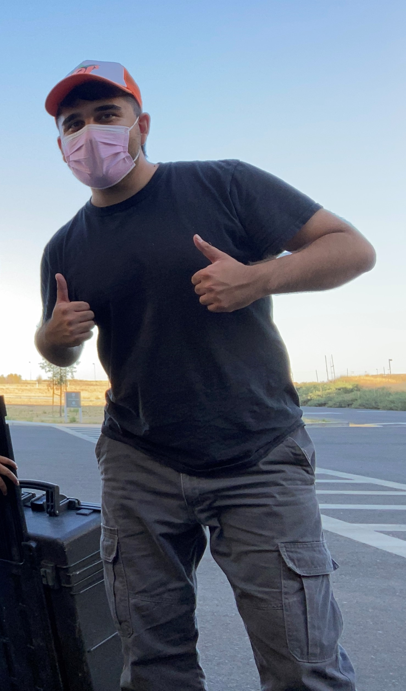

REMOTE SENSING RESEARCHER + ENVIRONMENTAL ENGINEER
 I am an undergraduate student/researcher at the University of California, Merced studying environmental engineering. Through my research, I have used a diverse set of remote sensing tools to integrate forms of atmospheric correction, analyze different water quality parameters, and classify wildfire burn severity and corresponding albedo response. I am interested in expanding my application areas of remote sensing to address environmental concerns.
I have previously interned as a Remote Sensing Researcher for the NASA DEVELOP National Program at NASA Ames Research Center, where I teamed in developing a Google Earth Engine Tool that monitors the extent of seagrasses within the Gulf of Mexico. Concluding my term at DEVELOP, I was one of three participants to be awarded the SSAI scholarship, commemorating the significant contributions I had offered to the program. Out of 21 teams, my team was also awarded first place for the NASA DEVELOP creative communications competition.
{kind=link}
{kind=link}